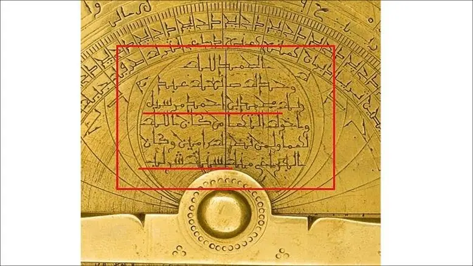
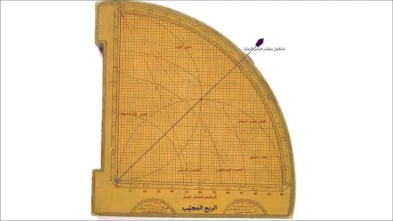
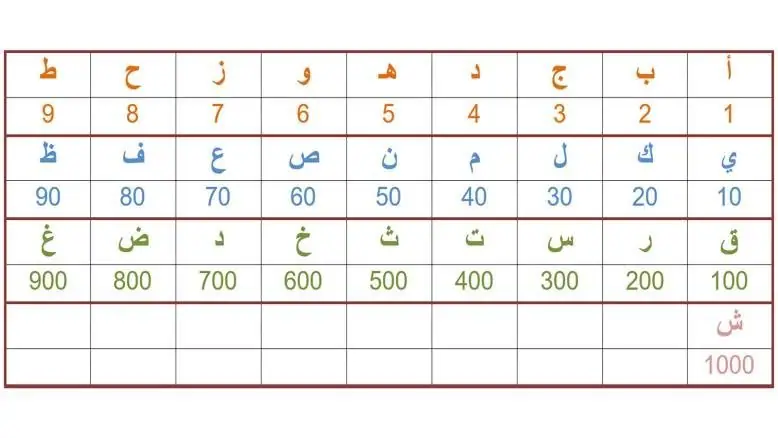

أخبار علمية ·
الأسطرلاب والربع المجيّب أداتان فلكيتان مدهشتان – هاني الضليع
عرف القدماء آلات رصد السماء وأجرامها المتعددة من نجوم وكواكب وشمس وقمر، وبرعوا في صناعة أشكال كثيرة منها منذ بطليموس الإغريقي الذي عاش حوالي القرن الثاني للميلاد، حيث طور الأسطرلاب الذي استخدم في رصد مواقع النجوم وحساب حركاتها.
وبانتقال الكثير من الترجمات اليونانية واللاتينية والهندية إلى العربية في بدايات القرن التاسع الميلادي (الثالث الهجري) انتشر الاهتمام بعلم الفلك وازداد عدد المحترفين في صناعة أدواته حتى غدا الأسطرلاب على سبيل المثال الساعة التي يقتنيها كل غني لمعرفة الوقت ومتابعة حركة أجرام السماء.
ويعد الأسطرلاب أداة شخصية بحتة، إذ يصنع أكثرها بأحجام صغيرة قابلة للحمل، لكنها في ذات الوقت ثقيلة نسبيا لأنها تصنع عادة من النحاس لحملها بشكل شاقولي ثابت لدى الاستخدام.

وقت الصلاة
وقد برع كل من الصوفي والفزاري ومريم الأسطرلابي والبيروني والزرقالي وغيرهم في صناعة هذه الأداة التي تجاوزت تطبيقاتها المئة تطبيق، ومن ذلك معرفة الوقت في اليوم، وحساب أوقات الصلوات، ومعرفة أوقات الشروق والغروب والزوال، ومواقع الكواكب في السماء، ومواعيد شروق النجوم وغروبها، والطوالع من منازل القمر، ومعرفة وقت الشفقين الصباحي والمسائي، ومعرفة خط عرض المكان، وأطوال النجوم وعروضها بالنسبة لمدار البروج، وغير ذلك كثير.
لكن أكثر ما أثار انتباه أولئك العلماء وأقلقهم هو حساب وقت دخول صلاة العصر التي لا يعتمد وقتها على ظاهرة غروب أو شروق أو زوال، بل إنه مرتبط بطول الظل الذي يتغير في كل يوم وعلى مدار العام.
لذا فقد قاموا بتطوير جزء من الرياضيات الهندسية فاخترعوا مصطلح ظل التمام (كوتاين)، وهو ما وصفه البيروني مفصلا في كتابه “استيعاب الوجوه الممكنة في صنعة الأسطرلاب”، حيث تكلم عن الربع المجيب ورسم عليه قوسي العصر الأول والثاني وفقا لتلك المعادلات المطورة، وأقواسا أخرى كثيرة تصف تطبيقات عديدة أخرى.

أداة مبهرة
فالربع المجيّب هو ربع دائرة يمكن أن تكون قطعة منفصلة أو جزءا من الأسطرلاب، وتعد بحد ذاتها أداة فلكية مبهرة لبساطتها وكثرة التطبيقات الحسابية فيها، فهي قادرة على أن تحسب لنا العديد من العمليات الرياضية الخاصة بالهندسة دون عناء، كقيم الجيب وجيب التمام والظل، وهي مخصصة لقياس زوايا ارتفاع الأجرام وانخفاضها، ومن السهل بوساطتها حساب ارتفاع مبنى أو جبل بقياس زاويتين تفصل بينهما مسافة محددة بالإضافة إلى رصد ارتفاعالشمس عبر فتحتي النصر فيها، ويمكن حساب وقت زوال الشمس، وميلها الاستوائي كذلك.
كما يمكن منها حساب اتجاه القبلة بدقة كبيرة للبلدان الواقعة في قارات آسيا وأوروبا وأفريقيا، ناهيك عن تحديد وقتي العصر الشافعي والحنفي لجميع أيام السنة.
أما الأسطرلاب -الذي عد بحق كمبيوتر ذلك الزمان- فيتكون من الشبكة التي تمثل خريطة السماء بنجومها وأجرامها الثابتة التي تدور مع دوران الأرض حول نفسها فتشرق وتغرب، وينقش عليها وبالقرب من كل حافة حادة مدببة الرأس اسم نجم لامع من نجوم السماء.
ويعمل المؤشر أو المسطرة الموضوعة فوق الشبكة على تعيين الوقت والتاريخ، ومن خريطة ظهر الأسطرلاب التي هي المرجع الرئيس في تحديد موضع الشمس في السماء لتاريخ محدد من السنة، وعليها مسطرة أخرى تدعى العضادة مسؤولة عن تحديد تلك البيانات، ومن القاعدة التي تمثلها عدد من الصفائح، ولكل مدينة صفيحتها.

حساب الجمّل
وترسم على كل صفيحة جميع الدوائر الأساسية للسماء كدائرة الاستواء والأفق والبروج وقوس الفجر ودوائر الارتفاع عن الأفق، ويرسم عليها كذلك النجم القطبي الذي يمثل محور الدوران، وهو ذاته محور الأسطرلاب الذي يدور حول قطب السماء، حيث يساوي ارتفاعه عن الأفق الشمالي خط عرض المكان، وبسببه تختلف الصفائح عن بعضها.
وقد أبدع العرب في رسم خرائط وشبكات الأسطرلاب وبخطوط عربية غلب عليها الخطان الكوفي والمغربي، متبعين في ترقيمها ما يعرف بحساب الجمّل (بتشديد الميم) وهو طريقة العد بالأحرف وفقا للترتيب الأبجدي (أبجد هوز حطي كلمن..).
وتمثل الحروف التسعة الأولى الأرقام التسعة (1- 9)، يليها حرف الياء ويمثل الرقم عشرة، والكاف عشرين واللام ثلاثين والنون أربعين، وهكذا إلى أن يصل العدد ألفا (1000)، فالحرفان (كه) على سبيل المثال يعنيان الرقم 25، وفي الأسطرلاب المرفقة صورته والمصنوع على يد الفلكي المغربي محمد بن أحمد مرسيل يذكر أنه انتهاء من صنعه سنة (شرلب) وهي تعادل بحسب العد الأبجدي المغربي السنة 1232هـ.
ولا يكاد متحف في العالم يخلو من أسطرلاب نقشت معالمه بالحروف العربية، بل إن أكثر أسماء النجوم اللامعة على هذه الأداة المميزة عربية الأصل، كالدبران والذنب ورأس الجاثي ورجل الجوزاء وغيرها، مما يدل على المكانة العالية التي حظي بها علم الفلك العربي في عصور الإسلام المزدهرة وما جاء بعدها من عصور وأجيال ورثت هذه الحضارة.
هاني الضليع
عضو الاتحاد العربي لعلوم الفضاء والفلك
المصدر الجزيرة
منشور منقول من أرشيف موقع الاتحاد كما نُشر، مع تنظيف التنسيق.